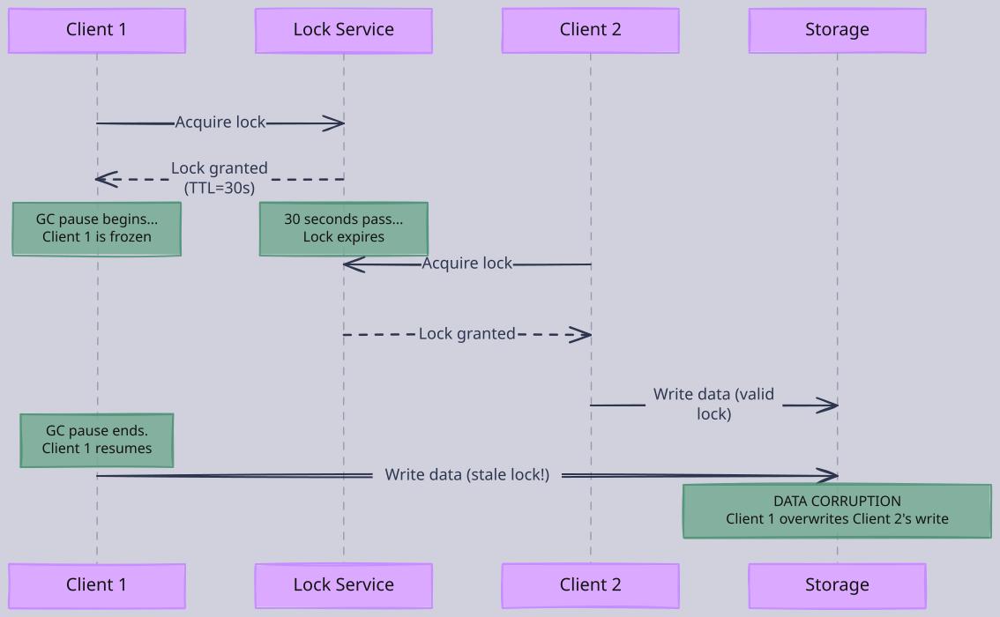
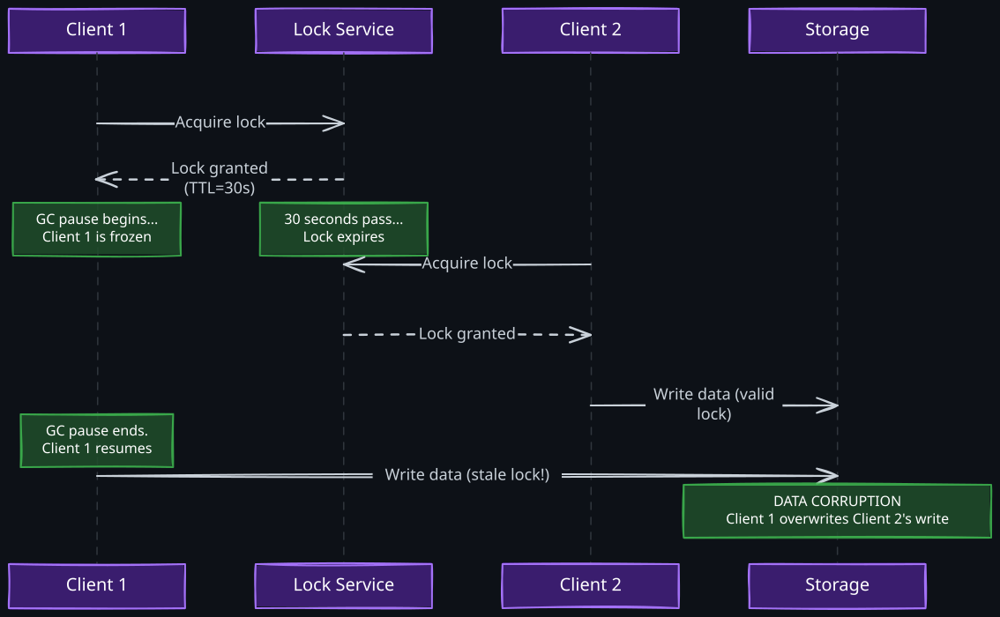
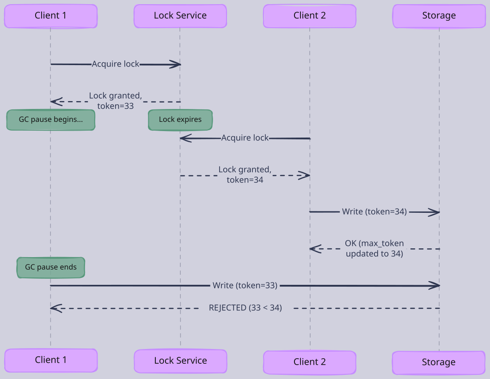
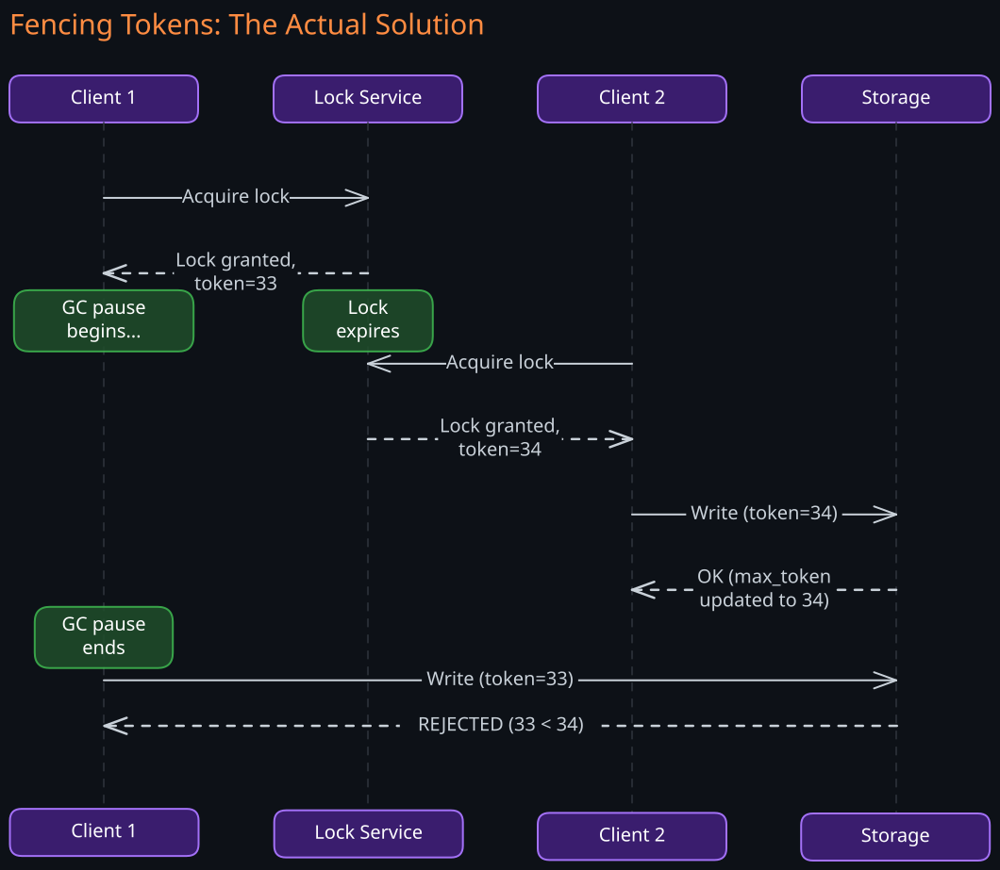
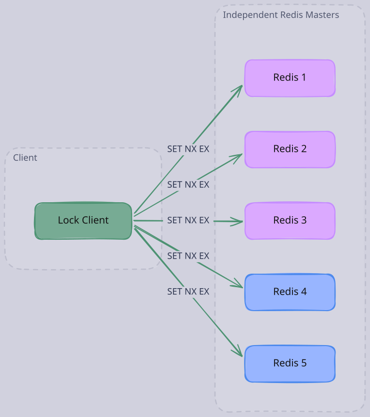
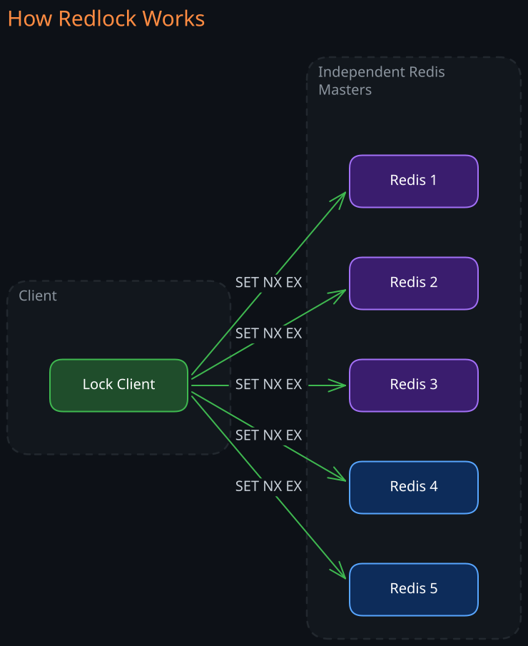
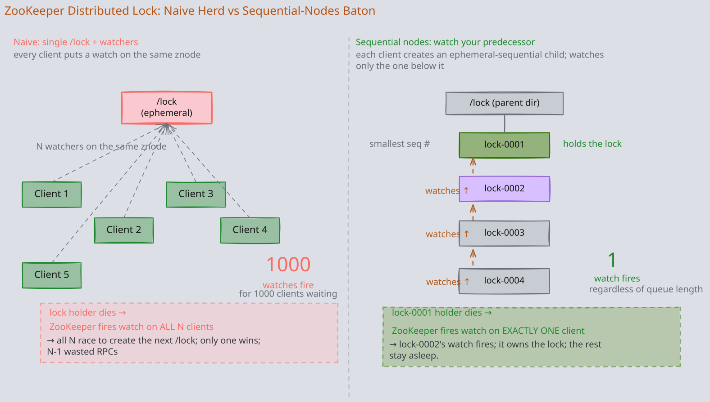
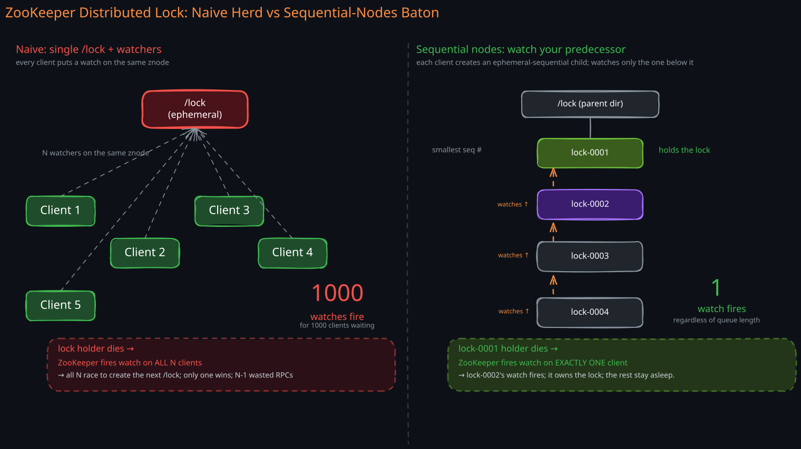

The Story
In 2016, Martin Kleppmann published a blog post arguing that Redis’s Redlock algorithm was fundamentally unsafe. Antirez (Redis creator) fired back the same week. The exchange became one of the most educational public debates in distributed systems. But the underappreciated detail: Kleppmann’s entire argument rests on a single scenario — a GC pause on the lock holder that outlasts the lock TTL. Antirez’s rebuttal essentially says “that scenario is so unlikely it’s not worth designing for.” Neither is wrong. They’re arguing about where to draw the line between theory and practice — which is the actual hard problem in distributed systems, not the lock itself.
A distributed lock is a mechanism that provides mutually exclusive access to a shared resource across multiple nodes in a distributed system. It sounds simple — it is the distributed equivalent of a mutex. But the gap between “mutex on one machine” and “mutex across machines” is enormous, and most of the interesting engineering in distributed systems lives in that gap.
Related Topics: 01-01-Redis, 02-Zookeeper, 03-Consensus-Algorithm, 02-CAP-and-PACELC, 07-Two-Phase-Locking, 05-Distributed-Transactions
1. Why Distributed Locks Are Hard
On a single machine, a mutex works because all threads share the same memory, the same clock, and the same failure domain. If the process crashes, all threads die together and the lock disappears. There is no ambiguity about who holds the lock or whether it has been released.
In a distributed system, none of these properties hold:
- No shared memory. Nodes communicate only through messages over an unreliable network. There is no global variable that every node can atomically read and write.
- No shared clock. Each node has its own clock, and clocks drift. You cannot rely on timestamps to determine ordering of events across nodes.
- Partial failure. A node can crash, freeze (GC pause), or become network-partitioned while holding a lock. The other nodes cannot distinguish between “crashed” and “slow” — this is the fundamental impossibility described by the FLP result.
- Independent failure domains. The lock holder and the lock service can fail independently. A node might believe it holds a lock that has already been revoked.
These properties mean that every distributed lock implementation must answer a question that local locks never face: what happens when the lock holder becomes unresponsive?
2. The Two Reasons to Use Locks
Martin Kleppmann draws a critical distinction between two purposes for distributed locks, and this distinction determines how much correctness you need:
1. Efficiency (Performance)
You use the lock to avoid doing expensive work twice. For example, preventing two cron job instances from both running the same daily report. If the lock fails and two instances run, you waste compute but nothing is corrupted. A “best-effort” lock (like a single Redis instance) is perfectly adequate here.
2. Correctness (Safety)
You use the lock to prevent concurrent operations from corrupting data. For example, ensuring that two processes do not simultaneously update the same bank account balance. If the lock fails, you get data corruption, lost writes, or inconsistent state. This requires a lock with strong guarantees — typically backed by a consensus protocol.
The mistake engineers make is using an efficiency-grade lock for a correctness problem. Redis SETNX is fast and convenient, but if your system relies on it to prevent data corruption, you have a correctness bug that manifests only under failure conditions — exactly when you need the lock most.
3. Progression: From Naive to Production-Grade
1. Database-Based Locks
The simplest approach uses a row in a relational database as the lock:
CREATE TABLE distributed_locks (
lock_name VARCHAR(255) PRIMARY KEY,
holder_id VARCHAR(255) NOT NULL,
acquired_at TIMESTAMP NOT NULL,
expires_at TIMESTAMP NOT NULL
);Acquire: insert a row (or update if expired). Release: delete the row.
INSERT INTO distributed_locks (lock_name, holder_id, acquired_at, expires_at)
VALUES ('report-job', 'node-7a3f', NOW(), NOW() + INTERVAL '10 minutes')
ON CONFLICT (lock_name) DO UPDATE
SET holder_id = EXCLUDED.holder_id,
acquired_at = EXCLUDED.acquired_at,
expires_at = EXCLUDED.expires_at
WHERE distributed_locks.expires_at < NOW();If the UPDATE affects one row, you hold the lock. If zero rows, someone else holds it.
Why this works for simple cases: the database provides ACID transactions, so two concurrent inserts will be serialized. You get mutual exclusion “for free” from the database’s own concurrency control.
Why this breaks at scale:
- The database becomes a bottleneck and a single point of failure for all locking
- Lock acquisition requires a network round-trip to the database, adding latency
- Expiry depends on database clock, and cleanup of stale locks requires polling
- Under high contention, the lock table becomes a hot row, causing lock escalation and throughput collapse in the database itself
Database locks are appropriate for low-frequency coordination — cron job deduplication, one-time migrations, batch job scheduling. They are not suitable for high-throughput locking.
2. Redis Single-Instance Locking
Redis provides an atomic SET command with conditional semantics that maps naturally to lock acquisition:
SET lock:resource-1 <holder-id> NX EX 30NX— set only if the key does not exist (atomic test-and-set)EX 30— auto-expire after 30 seconds (prevents deadlock on crash)
If the command returns OK, you hold the lock. Otherwise, someone else does.
Release must be conditional — you should only delete the key if you still own it. This requires a Lua script for atomicity:
if redis.call("GET", KEYS[1]) == ARGV[1] then
return redis.call("DEL", KEYS[1])
else
return 0
endWithout this check, a node whose lock has expired could delete the key that now belongs to a different lock holder.
Why single-instance Redis locks are popular: sub-millisecond latency, simple API, auto-expiry handles crash recovery, and libraries like Redisson wrap the complexity.
Why single-instance Redis locks are unsafe for correctness:
- If Redis crashes and restarts, all locks vanish. Even with AOF persistence, there is a window of data loss.
- If a lock holder experiences a GC pause or network partition longer than the TTL, the lock expires while the holder still believes it holds the lock. Now two clients operate concurrently on the same resource.
- There is no way for the lock service to “revoke” a lock from a holder — it simply waits for expiry.
4. The GC Pause Problem
This failure mode is so important that it deserves its own section. It applies to every lock implementation that uses time-based expiry (Redis, database locks, etc.).


The sequence:
- Client 1 acquires the lock with a 30-second TTL
- Client 1 enters a GC pause (or network partition, or CPU scheduling delay)
- The lock expires after 30 seconds
- Client 2 acquires the same lock and performs a write
- Client 1 resumes, unaware that its lock expired, and performs a conflicting write
No amount of TTL tuning fixes this. Making the TTL longer reduces the probability but extends the deadlock window when holders actually crash. Making it shorter increases the probability of false expiry. The fundamental issue is that the lock holder cannot know it has been paused — from its perspective, no time passed during the GC pause.
5. Fencing Tokens: The Actual Solution
The fix is to stop relying on the lock holder to “know” whether it still holds the lock, and instead have the storage layer reject stale operations.
A fencing token is a monotonically increasing number issued with each lock grant. Every operation performed under the lock must include the fencing token. The storage layer tracks the highest token it has seen and rejects any operation with a lower token.


The critical insight: safety is enforced at the storage layer, not at the lock layer. The lock service provides mutual exclusion as a best effort, and fencing tokens catch the cases where that best effort fails.
This is why Kleppmann argues that if your storage layer supports fencing tokens, you may not need a distributed lock at all — you could use any mechanism that generates monotonically increasing tokens (like ZooKeeper’s zxid or an incrementing database sequence). The lock becomes a performance optimization (reducing contention) rather than a correctness mechanism.
Critically, the max-token-seen state must be persisted alongside the data it protects, not in a separate in-memory counter. In practice, this means the storage system includes the fencing token as a version field in the row itself, so the comparison and the write happen atomically within the same transaction. If the storage node crashes and recovers, the persisted token in the data ensures stale writes are still rejected without relying on volatile state.
For fencing tokens to work, every downstream system that the lock holder interacts with must understand and enforce token ordering. This is the hard part in practice — it requires modifying storage APIs and client protocols.
6. Redis Redlock Algorithm
Redlock is Redis creator Salvatore Sanfilippo’s attempt to build a “correct” distributed lock on top of multiple independent Redis instances. Instead of relying on a single Redis node, it uses N independent Redis masters (typically 5).
1. How Redlock Works


Algorithm:
- Record the current time (
T1) - Attempt to acquire the lock on all N Redis instances sequentially, using
SET NX EXwith the same key, value, and TTL on each - For each instance, use a small timeout (e.g., 5-50ms) so a slow or crashed instance does not block the algorithm
- If the lock was acquired on a majority of instances (at least
floor(N/2) + 1), and the total elapsed time (T2 - T1) is less than the lock’s TTL, the lock is considered acquired - The effective lock validity time is
TTL - (T2 - T1) - clock_drift_allowance - If the lock was not acquired (insufficient majority or timeout exceeded), release the lock on all instances
2. Kleppmann’s Critique of Redlock
Martin Kleppmann’s 2016 analysis (“How to do distributed locking”) identified fundamental problems with Redlock:
1. The timing assumption problem. Redlock’s safety depends on an assumption about bounded clock drift and bounded process pauses. The algorithm calculates “effective lock time remaining” by subtracting elapsed wall-clock time. But if a process pauses (GC, VM migration, context switch) between step 1 (recording time) and step 4 (checking elapsed time), the calculation is wrong. Worse, a pause after step 4 means the client believes it holds a valid lock, but the lock may have already expired on the Redis instances.
2. Clock jumps. Redlock assumes clocks move forward at a roughly constant rate. But NTP can jump clocks forward or backward, system administrators can adjust time manually, and VM migration can cause clock discontinuities. If a Redis instance’s clock jumps forward, its lock expires prematurely, allowing another client to acquire it. Now two clients hold the lock.
3. No fencing token support. Redlock does not provide a mechanism for generating fencing tokens. Each lock grant does not produce a monotonically increasing identifier that the storage layer can use to reject stale operations. Without fencing, the GC pause problem remains.
4. The fundamental issue. For efficiency-grade locks, single-instance Redis is simpler and equally good — if Redis crashes, you tolerate duplicate work anyway. For correctness-grade locks, Redlock provides weaker guarantees than a consensus-based system while being more complex to operate.
Sanfilippo’s rebuttal argued that real-world clocks are “good enough” and that the timing assumptions are reasonable in practice. This is a philosophical disagreement about whether distributed systems should depend on timing assumptions for safety. The consensus in the distributed systems community generally sides with Kleppmann: safety properties should not depend on timing.
7. ZooKeeper-Based Locking
Zookeeper is built on the ZAB consensus protocol and provides strong consistency guarantees that make it fundamentally different from Redis for locking purposes.
1. Core Primitives for Locking
- Ephemeral nodes: a znode that is automatically deleted when the client session that created it ends. If the lock holder crashes or loses its connection, ZooKeeper detects the session timeout and deletes the node. This provides automatic lock release without TTLs.
- Sequential nodes: when you create a znode with the
SEQUENTIALflag, ZooKeeper appends a monotonically increasing counter to the node name. This provides natural ordering — and the counter serves as a fencing token. - Watches: a client can set a watch on a znode and receive a notification when that znode changes. This avoids polling.
2. The Naive ZooKeeper Lock (Herd Effect)
A naive implementation:
- All clients try to create an ephemeral node
/locks/resource-1 - One client succeeds (creates the node) and holds the lock
- All other clients set a watch on
/locks/resource-1 - When the lock holder finishes and deletes the node (or crashes, causing ephemeral node deletion), ZooKeeper notifies all watchers
- All watchers race to create the node again
The problem is the herd effect (also called thundering herd). If 100 clients are waiting for the lock, all 100 receive the notification simultaneously and all 100 attempt to create the node. 99 fail. This creates a spike of traffic to ZooKeeper that scales linearly with the number of waiters.
3. The Correct ZooKeeper Lock (Sequential Nodes)
The production-grade approach (implemented by Apache Curator’s InterProcessMutex):
- Each client creates an ephemeral sequential node under
/locks/resource-1/:- Client A creates
/locks/resource-1/lock-0000000001 - Client B creates
/locks/resource-1/lock-0000000002 - Client C creates
/locks/resource-1/lock-0000000003
- Client A creates
- Each client lists the children of
/locks/resource-1/and checks if its node has the lowest sequence number - If yes, the client holds the lock
- If no, the client sets a watch on only the node with the next-lower sequence number
- Client B watches
lock-0000000001(not all nodes) - Client C watches
lock-0000000002
- Client B watches
- When a node is deleted (lock released or session expired), only the next client in line is notified
This converts the lock wait queue into a linked list. Each client watches exactly one predecessor. When the lock is released, only one client is notified — eliminating the herd effect entirely. The number of ZooKeeper notifications per lock release is O(1) instead of O(n).


4. Why ZooKeeper Locking Is Stronger
| Property | Redis Locking | ZooKeeper Locking |
|---|---|---|
| Lock release on crash | TTL expiry (delayed) | Ephemeral node deletion (session timeout) |
| Fencing token | Not built-in | Sequential node number serves as token |
| Consistency model | Best-effort, no consensus | Linearizable reads/writes via ZAB |
| Split-brain protection | None (or Redlock’s timing assumption) | Quorum-based consensus, single leader |
| Watch/notification | Polling or pub/sub | Native watch mechanism |
ZooKeeper’s sequential node counter is a natural fencing token. When Client B acquires the lock with sequence number 0000000002, that number is guaranteed to be higher than Client A’s 0000000001. If Client A’s session expires but it continues operating with stale state, any storage system that tracks the highest fencing token will reject Client A’s operations.
5. ZooKeeper’s Weakness
ZooKeeper’s session timeout detection is not instantaneous. A typical session timeout is 10-30 seconds. During this window, if a client freezes but its session has not yet expired, ZooKeeper still considers it the lock holder. This is a shorter window than Redis TTL-based expiry (which you must set conservatively), but it is not zero. Fencing tokens remain necessary for true safety.
8. etcd-Based Locking
etcd provides similar guarantees to ZooKeeper but uses the Raft consensus protocol and exposes a different API. etcd’s locking primitive is built on leases — a time-bounded grant that must be periodically renewed.
Lock acquisition with etcd:
- Create a lease with a TTL
- Attach a key to the lease:
PUT /locks/resource-1 <holder-id> --lease=<lease-id> - Start a keep-alive goroutine that periodically renews the lease
- If the client crashes or stops renewing, the lease expires and the key is deleted
etcd also supports Revision numbers on keys, which serve the same purpose as ZooKeeper’s sequential node numbers — they are monotonically increasing and can be used as fencing tokens.
The primary difference from ZooKeeper is operational: etcd uses gRPC, is simpler to deploy (single binary), and is the native coordination service for Kubernetes. If your infrastructure already runs Kubernetes, etcd is readily available.
9. Comparison: Redis vs ZooKeeper vs etcd
| Dimension | Redis | ZooKeeper | etcd |
|---|---|---|---|
| Consensus protocol | None (single-node) or timing-based (Redlock) | ZAB | Raft |
| Consistency guarantee | Eventual / best-effort | Linearizable | Linearizable |
| Lock release on crash | TTL expiry | Session expiry + ephemeral nodes | Lease expiry |
| Fencing token | Must implement externally | Built-in (sequential znode ID) | Built-in (key revision) |
| Latency | Sub-millisecond | Low milliseconds | Low milliseconds |
| Throughput | Very high | Moderate | Moderate |
| Operational complexity | Low (single process) | High (requires ensemble of 3-5 nodes, JVM tuning) | Moderate (single binary, but requires quorum cluster) |
| Best for | Efficiency locks, rate limiting, caching coordination | Correctness locks, leader election, configuration management | Correctness locks in Kubernetes-native environments |
The decision framework: If the consequence of two clients holding the lock simultaneously is wasted work, use Redis. If the consequence is data corruption, use ZooKeeper or etcd with fencing tokens.
10. Real-World Usage Patterns
1. Leader Election
A common pattern where exactly one node in a cluster acts as the “leader” that performs coordination tasks. Each node attempts to acquire a distributed lock. The node that succeeds becomes the leader. When it crashes or loses the lock, another node acquires it. This is how Kafka controller election works (via ZooKeeper), how Elasticsearch master node election works, and how many job schedulers select which instance runs scheduled tasks.
2. Distributed Job Scheduling
Multiple instances of a service need to run periodic tasks without duplication. Before executing a job, each instance tries to acquire a lock named after the job. Only one instance succeeds and runs it. The lock TTL should be longer than the maximum expected job duration.
3. Resource Access Control
When multiple services need exclusive access to an external resource that does not support concurrent access — a legacy API with no idempotency, a file on a shared filesystem, a hardware device. The lock serializes access.
11. Anti-Patterns
1. Using Correctness Locks Where Efficiency Locks Suffice
If your system can tolerate occasional duplicate processing (most can), using ZooKeeper for locking adds latency and operational complexity for no benefit. A single Redis instance with SETNX is simpler, faster, and “good enough.”
2. Lock Contention at Scale
If many clients are frequently contending for the same lock, the lock becomes a bottleneck. This is a design smell. Consider:
- Partitioning the resource: instead of one lock, use per-partition locks (e.g., lock per user ID, lock per shard)
- Optimistic concurrency control: use compare-and-swap or version numbers instead of pessimistic locking
- Queue-based serialization: route all operations through a single-writer queue (e.g., Kafka partition) instead of locking
3. Holding Locks Across Async Operations
Acquiring a lock, then making an HTTP call to another service, then releasing the lock. The HTTP call might hang, the lock might expire, and the entire pattern becomes unreliable. Keep lock-protected critical sections short and local.
4. Ignoring Lock Expiry During Long Operations
If your critical section might take longer than the lock TTL, you have two bad options: set a very long TTL (which means long recovery time if the holder crashes) or implement lock renewal (which adds complexity and can itself fail). The better approach is to restructure so that the lock-protected section is short, and use fencing tokens for the downstream operations.
Revision Summary
- Distributed locks are fundamentally harder than local locks because of partial failure, no shared memory, and no shared clock.
- Two purposes: efficiency (prevent duplicate work, best-effort OK) vs correctness (prevent data corruption, requires strong guarantees).
- Redis SETNX + TTL is fast and simple but provides no consensus guarantee. Safe for efficiency, unsafe for correctness.
- Redlock attempts consensus across N Redis instances but relies on timing assumptions (bounded clock drift, bounded process pauses) that Kleppmann argues are unsafe.
- ZooKeeper uses ephemeral sequential nodes with the ZAB consensus protocol. Sequential node IDs serve as fencing tokens. The “watch predecessor” pattern avoids the herd effect.
- etcd provides similar guarantees to ZooKeeper via Raft, with lease-based lock expiry and key revisions as fencing tokens.
- The GC pause problem: a lock holder pauses, lock expires, another client acquires it, original resumes and corrupts data. This affects all TTL-based systems.
- Fencing tokens are the real solution to the GC pause problem. Safety is enforced at the storage layer, not the lock layer. The storage rejects operations with tokens lower than the highest it has seen.
- For correctness, the complete solution is: consensus-based lock service + fencing tokens + storage-layer enforcement.
Deep Understanding Questions
-
GC pause during Redlock: A client successfully acquires a Redlock on 3 of 5 Redis instances, then enters a 60-second GC pause (lock TTL is 30 seconds). What happens? Can another client acquire the lock? When the first client resumes, how does it know its lock is invalid? What damage could it do if fencing tokens are not used? Ans:
-
Clock skew in Redlock: One of the 5 Redis instances has its clock jump forward by 20 seconds due to an NTP correction. How does this affect the safety of Redlock? Could it cause two clients to believe they hold the lock simultaneously? Ans:
-
ZooKeeper session expiry race: Client A holds a ZooKeeper lock via an ephemeral sequential node. A network partition isolates Client A from the ZooKeeper ensemble. Client A’s session times out and its node is deleted. Client B acquires the lock. The network heals and Client A reconnects. What does Client A see? How should Client A’s application logic handle this? Ans:
-
Fencing token gaps: Your storage layer enforces fencing tokens by rejecting any write with a token lower than the max it has seen. Client 1 acquires token 33, Client 2 acquires token 34, Client 2 writes successfully. Client 3 acquires token 35 but crashes before writing. Client 4 acquires token 36 and writes. Is there any problem with token 35 never being used? What if a very delayed Client 1 now tries to write with token 33? Ans:
-
Lock renewal failure: A service uses Redis with lock renewal (extend TTL every 10 seconds, TTL is 30 seconds). The renewal goroutine crashes due to a bug, but the main thread continues processing. How long until the system detects the problem? What happens during that window? Ans:
-
ZooKeeper herd effect: Why does the naive ZooKeeper lock (all clients watch the lock node) cause O(n) notifications per lock release? How does the sequential node approach reduce this to O(1)? In what scenario could even the sequential approach cause a notification storm? Ans:
-
Choosing lock granularity: You are designing a distributed file storage system where millions of files can be updated concurrently. Should you use one global lock, one lock per file, or one lock per storage shard? What are the tradeoffs of each? At what point does lock overhead become the bottleneck? Ans:
-
Redlock vs consensus: If you need correctness guarantees, why not just use ZooKeeper or etcd instead of Redlock? What is Redlock actually providing that single-instance Redis does not, and is it worth the operational cost of running 5 independent Redis instances? Ans:
-
Fencing without locks: Kleppmann suggests that if your storage supports fencing tokens, you might not need a distributed lock at all. Design a system that provides mutual exclusion-like behavior using only a monotonically increasing token generator and storage-layer enforcement, without a lock service. What are the tradeoffs compared to using an actual lock? Ans:
-
Partial lock acquisition: In Redlock, a client acquires the lock on 2 of 5 instances and then crashes before trying the remaining 3. Those 2 instances now have a key with a TTL. Another client tries to acquire the lock and succeeds on the other 3 instances (majority). Is this safe? What if the first client’s keys on instances 1-2 have not yet expired when a third client tries? Ans:
-
Distributed lock in a microservices architecture: Service A acquires a distributed lock, then makes an RPC to Service B, which makes an RPC to Service C, which writes to a database. Service A’s lock expires during the chain of RPCs. How would you redesign this to be safe? Consider both the lock strategy and the overall architecture. Ans:
-
etcd lease keep-alive failure: An etcd client holds a lock via a lease with a 15-second TTL and renews every 5 seconds. The network becomes partitioned, preventing keep-alive messages. After 15 seconds, the lease expires on the etcd cluster side, but the client does not receive the expiry notification (also blocked by the partition). How does the client detect it no longer holds the lock? What should the client’s application logic do when the keep-alive channel reports an error? Ans: